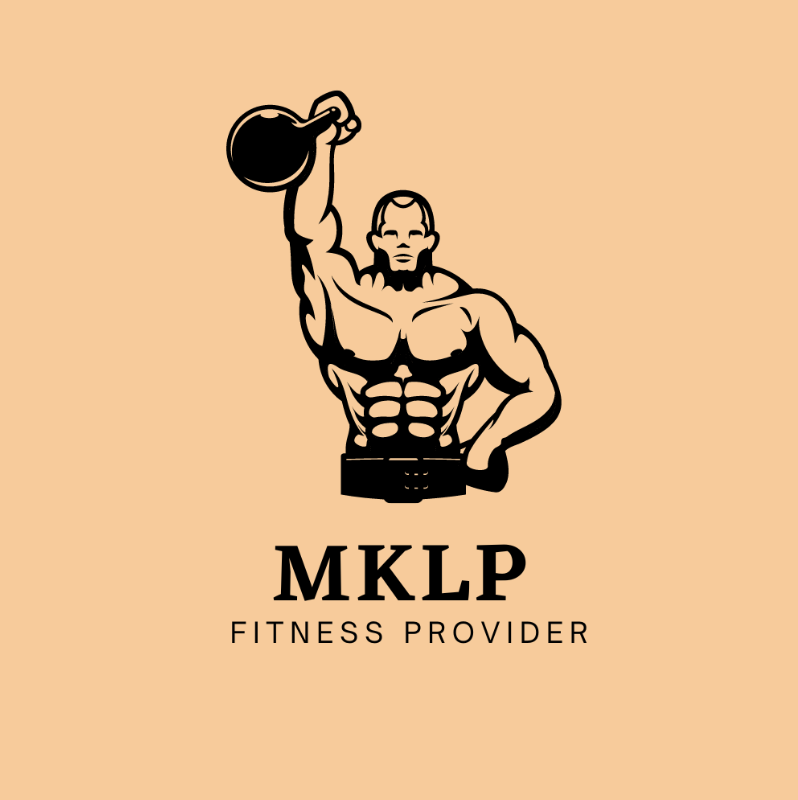

SCHOOL OF SCIENCE, ENGINEERING AND TECHNOLOGY
Semester C - 2022
COSC2083 - Intro to Information Technology
GYM SALE WEBSITE
Our IT world - Final REPORT
Group 12

Our team name MKLP ,which is a combination of the names of every member of our group (Minh, Khai, Long and Phat), is a special and individual approach to express our team and our own identities. We may bring you a sense of cohesion and togetherness while respecting the uniqueness of each team member by integrating our names into a single, unified unit.
The importance of inclusivity and diversity within our team is demonstrated by the fact that our team name contains the names of every member of the group. It recognizes the significance of each person's contribution as well as the importance of having a variety of experiences and points of view. Although we are not the same age, we can work well under circumstances.
Our team name is not only significant to us individually and collectively, but it also helps us stand out in the crowded fields of business and academia. It is a distinctive and memorable method for us to represent who we are and what we do, and it aids in building our reputation and brand.
Overall, our team name is a representation of our unity, diversity, and dedication to our common objectives rather than merely a collection of names. We are motivated and inspired by it, which makes it easier for us to collaborate well and succeed.
Student email : s3979628@rmit.edu.vn
Date of birth: 5/1/2004
Contact number: 0886812237
Interest in the topic: My name is Cao Le Hoang Minh. I’m a freshman at RMIT and this is my first ever course at the university. I have always taken an interest in computers in general and Information Technology in particular though I didn’t have any experience with this subject. My main focus now is to master the Python programming language and to have a high GPA in my first year. Besides learning about computers, I also love watching and playing football.
Relevant skills: Hands-on experience with Python. Soft skills: capable of self-learning, team-working and solving problems.
Role in this project: Minh is in charge of running the project’s Facebook, Tiktok pages (taking pictures, writing captions, posting) and Google Ads.
School email: s3975831@rmit.edu.vn
Date of birth: 17/03/2003
Contact number: 0913954191
Interest in topic: I have just recently started working out in the gym. Fitness starts being more popular in daily life. Buying supplements and equipment is common for every athlete if they demand for the best results. However, not all retailers specify which products are appropriate for each physical condition. Moreover, instead of telling how to use the product in detail. They just give a brief instruction, which is why I would like to establish a website to provide consumers with the best personalized service.
Relevant skill: Hard skills: Researching about the topic, Programming, Reading scientific reports;Soft skills: Corporation, Flexibility, Proactive
Role in this project : I mainly plan for the idea of project and website designing path. My responsibility is create working space for all members, designing user interface and reconstruction of web design
Student email : s3965673@rmit.edu.vn
Date of birth: 13/04/2000
Contact number: 0827583373
Interest in the topic: Long has started to join the Gym and realized there are many difficulties for newbies: equipment, nutritional supplements, experience, lesson, and finding a personal instructor, The fitness community is growing, but there is no one official website that can sell all the necessary equipment and services to those people who need to develop and tutorials for beginners. Therefore, to develop a professional gym website is extremely necessary for this community.
Relevant skills: Hard skills: Programming (Python, JavaScript, HTML, etc.), Writing report, Presentation; Soft skills: Public Communication, Collaboration, Organization, Adaptability.
Role in the project: Designing the website’s format, researching for web detail and gym resources for creating details in selling market web, response for report completion and finalizing teamwork
School email: s3963893@rmit.edu.vn
Date of birth: 16/07/2004.
Contact number: 0812888246.
Interest in topic: I regularly go to the gym and use my free time to practice soft skills like cooking and self-learning. I picked up cooking so I could manage the calories and nutrients in my food. Additionally, visiting the gym helps me live a healthy lifestyle. I have observed people struggling to perform physical activities in incorrect stances. Therefore, creating this website was the finest thing I could have done.
Relevant skills: Logical Thinking, Well-Organized, Self-Learning and Adaptability, Python
Role in this project: I designed the website, specifically, the Machine sale page. On top of that, I also collected the perspectives of our group and wrote the group reflection. On top of that, I represented the whole group to write the Overview, Group Processes and Testing.
In this project, our group has made an outstanding effort to complete this assignment because we have done our best to keep in touch with each other and we also persuade our teammates to accomplish their tasks before our mini deadlines. On top of that, we divided the tasks equally for everyone. Therefore, finishing all tasks before our mini deadlines was no longer doubtful. Because this semester is the first time we have collaborated with each other, there were some obstacles that we faced. Last but not least, we hope to have more opportunities to collaborate as a team. Therefore, we can improve our skills as well as our performance.
A common element among our career plans is the desire to work in the field of Information Technology. Each person has chosen this major at RMIT and is interested in pursuing a career in a related field. We would have to take step by step by gaining experience and continuing to learn in order to improve our skills, advance careers and achieve our goals.
There are also some differences between these career plans. Minh's career plan involves becoming a data scientist and specializing in topics such as data structures, that involves using data to solve complex problems and make informed decisions. While Khai is more interested in web development and software engineering which involves designing and building websites and software applications. Khai is particularly interested in personalizing services and products, and believes that artificial intelligence and machine learning will be key to achieving this goal. Phat's career plan involves working as a website developer and he recognizes the value of experience in this field. Therefore, he plans to work in this role to gain more knowledge and eventually earn a new degree to improve his chances of career advancement. Long is interested in frontend development, which involves designing and building the user interface of websites. He is attracted to the creative aspect of this role and plans to apply for full-time or freelance jobs in this field and potentially transition into teaching. These differences reflect the unique interests and goals of each person in the group.
Overall, the career plans of this group are somewhat similar, as we all involve working in the field of Information Technology. However, there are also some differences in terms of specific job roles and areas of focus.
Group12_FinalProjectOutcome.com
We chose Figma to design a prototype of our website as it provides a workspace for working at any time, even though when all of us are modifying, it still runs normally which is an advantage of this platform. On Figma, team members have done common parts of a commercial website. To explain:
Long has created a Homepage for users when they first enter the website. He also designed the template for all frames.
Khai, Minh, Phat make functional frames for the websites like selling pages including supplements, clothes, equipment, and some optional features. Moreover, we have already added some interactions and transitions between frames to make our prototype more realistic.
GitHub is a common service for programmers since the leader of the project could keep up with the progress and updates made by team members. We convert our document to an HTML webpage using GitHub so that our team members can work together.
Fill here
Fill here
Fill here
Fill here
Fill here
Fill here
MKLP Fitness Provider is a website that provides all fitness and fitness-related products and services to consumers who are new to sports experience and who need to purchase fitness products and services. This offering requires vendors and website developers to constantly update products and monitor personal trainer services to meet user needs. To do this and develop the website to the fullest, we think it will need dedication to the following positions:
The first important position is Developer, specifically Lead Backend Developer with 3-5 years of experience. This is the job of keeping the website running smoothly, and providing and maintaining the website's features to satisfy the users. Currently, our website still lacks features to maximize the usability of the sales website such as AI Chatbot, user credit score, promotion code, and website referral code, ... and these are the tools that require developers to add in the future. At the same time, the developer must have the skills to manage the sales data of the website and create SKUs for each product to classify and sell. Finally, backend developers must have the skills to collaborate with designers to ensure the visual element is working properly.
The next required work is a User Interface Designer. From our perspective, MKLP has been designed in a semi-professional way, but the interface of the sales section still needs editing to reach more users. So we want to target Apprentice Designers, who have 1-2 years of semi-professional experience but still meet the aesthetic market. An attractive website is important, but incorporating features that are capable of developers is not an easy task. Therefore, we need to find a Designer who has a high ability to collaborate rather than being too professional with just one design.
Besides developing and maintaining the MK LP website, We need to bring it to more and more customers. Our website has the idea of providing a full range of fitness products and services for everyone. to all beginners and experienced people in training. It's a new idea to combine selling products and personal coaching services together, and this will work for busy customers. A professional Marketing Strategy is a missing piece in the team. We require experience in marketing as well as SEO of your products in search engines in an effective way to bring your website to google users. Marketers require social network algorithms, knowing how to run ads, and coming up with recurring strategies and ideas like understanding discounts or freebies for new customers. 3 years of experience is the minimum for this position as this is a new project that requires maximum user reach.
The last member we are looking for is a site manager. The manager's job is to bring team members together to understand the ideas of both designers and developers to ensure the most effective work and maintenance of the website. . The website manager directly receives users' comments about the website to find remedies and improve, and marketing ideas from the position of a marketer will be transferred to the website manager and given to the department. development department as sales events, you need support from the backend supporting the final developer's programming. Managers will hold the data and information to know the status of the website to make user-directed marketing or remedial requests. We need 4 to 5 years of experience for this position.
In short, we want to maximize what we can for the website and bring the website to more users so the 4 places above the name are necessary to get quick results and be effective for both investors and the founder.
Our team is now using Figma to design and construct a sample version of our website. While the sample version is not a completely functional website, it allows us to present the essential features and functionalities that we intend for the final product.
The sample website offers an extensive catalog of gym supplements, equipment and fashion clothing from major manufacturers and distributors, complete with product information, pricing, and all necessary information. Users can compare different items and pick the best solutions for their needs. The website also has a user-friendly interface, clear and simple product descriptions, and a secure online checkout process.
Another website feature is a user-friendly design with clear and simple product descriptions, as well as a secure online checkout process. This makes it simple for consumers to explore the site, locate what they're looking for, and make secure purchases.
Figma is an amazing tool for building a website for beginners, but it has its limitations. It is hard to make changes when the design is completed. This is due to Figma's lack of versatility and customization in comparison to more powerful design programs such as Adobe Illustrator or Photoshop. This implies that changing the layout or appearance of the design sometimes necessitates starting from scratch or making considerable changes to the existing design, both of which can be time-consuming and labor-intensive.
Product comparison tools and expert evaluations are also available on the website to assist clients in making informed purchasing selections. Customers benefit from these resources because they help them narrow down their selections and find the finest items for their needs.
While the demo website lacks a full database and other real-world website functionalities, it is a useful prototype for our team to show our process of making a website . We are continuously working to complete the Figma prototype as we try to learn more knowledge about Html, Css and JavaScript in order to construct a website that has all the functionality in the future.
During this project, we recognized the core value of teamwork for the best outcome. Therefore, we have conducted several discussion meetings as a way to complete the idea as well as to improve our team chemistry. Although most of us are freshmen, we have overcome all the problems that we faced. Consequently, we admitted that we have done a great job in communicating in this project. At first, we were still hesitant to interact with each other. However, the longer we worked together, the closer we became.
Astonishingly, the Pfit function was our unique feature at the beginning of the project. However, it turned out that our level cannot meet the requirements for that feature. Instead of realizing that feature, we had discussed and went to a decision to make an alternative feature which users can choose and hire Personal Trainers straight from the website. This method can help our customers to get support and clarification from the PTs and they will also consult the customers to choose the service which fits them the most. On top of that, the productivity of the whole team is really astounding. To make it clearer, every mini deadline was met by the whole group without being told to do their tasks.
It is doubtful that we did a good job together in this project. Nonetheless, we have to admit that there are several weaknesses that need to be improved significantly. First of all, the frame of our website was in the wrong scale which does not fit the monitors of our devices. After having recognized this problem, we have already completed our product and there was not enough time for our group to rescale this product. This is a huge mistake that we made, and we will pay more attention to researching the tools that we will utilize as well as the basic knowledge to complete the upcoming project as well as we can. In addition, planning time is also our weakness. We started doing the website 4 weeks before the deadline but we spent so much time learning Figma and making the website, we should have studied it in advance to implement the progress faster. Those are the two things that we could learn from experience.
We have worked together since the beginning of this semester. Therefore, we have learned some things about the group. First and foremost, trusting is the most paramount important element to create an efficient team. Believing in the ability and skills of each member allows us to be brave to face our vulnerability. So we can know where the expertise is, and know which tasks should not be given to our teammates. Furthermore, the more we communicate, the more possible benefits of teamwork we can gain. Clear communication is a crucial component of effective teamwork, tagging people is also a good idea as they are notified and they do not miss the essential resources and information. Last but not least, avoiding conflicts and ensuring the happiness of everyone is extremely important. Happy people are always productive, and it is what we learned from our experience.
We think our team did well. Well-communicated. We spoke frequently, provided updates, and requested assistance via video call and chat. We stayed on track and improved the website.
Our planning needs improvement. Last-minute additions and changes were common. This delayed our schedule and made organizing harder. Future preparation and sticking to our strategy may help us.
Online collaboration shocked me. We were pleasantly surprised by how effectively working remotely worked for communication and collaboration. We collaborated on the website, shared files, and scheduled meetings using Messenger, Discord, and Microsoft Teams.
Group organization and communication are essential. Regular check-ins using a shared document (Google Docs, Figma) helped us track our progress and assign assignments.
Our teamwork was great. We live too far apart to meet in person. Instead, we hold meetings and discussions online. It's also fantastic since my teammates were understanding when I was occupied outside and could not work with them.
We had some last-minute alterations despite working effectively together. We managed those changes before our mini-deadlines. Thus, I believe that planning should be the first thing improved in the next project so that everyone can work efficiently.
Our collaboration and eagerness to help surprised me. As a freshman, I did not know what tools to use for the assignment, so my colleagues, who had studied before me, helped me choose and apply those tools.
This project taught me Figma and time management. I quit playing games and surfing the Internet to work and meet mini-deadlines. I finally know how to use Figma after constructing our product.
After the proposal, our team put in extra effort to create a Figma prototype, which led to an improvement in team chemistry. This was the first time we had used Figma, so we held meetings to design a template and mechanics for our website. Despite living far apart, we still managed to spend time working on the website.
However, I faced a problem when Tet, a special event in Vietnam, was approaching. My neighbors had to prepare for the occasion, making it harder for me to use the Internet as workers were repairing everything, including the electricity, which affected the surrounding area and transmission route. But, my team members were understanding and helped me with my tasks.
During this project, I realized that design and Internet skills are essential. I learned how to make a website more attractive through logos, templates, and layouts. Additionally, I improved my keyboard shortcuts to optimize my working time.
Working in a team helped me understand that there are many areas that need improvement. For example, I had to start using Figma from scratch, and it took me time to get used to it. To achieve the best outcome for the project, I must strive harder and not let my limitations hold me back as it improves our team's connection, as we always help each other to deal with different troubles.
After 3 months of building this project, I have created a website that sells and provides fitness services, and my teammates and I have had a pretty good experience working together. The planning and building of the website image happened quickly and everyone was very cooperative in the assigned work. However, the remaining members are quite passive when they can't find their own work or ideas for the project but only follow the assigned work, not enthusiastic about specific small jobs. I think if we are more proactive in building and dividing work fairly, the collective spirit will be more stable and there will be no situation where people do more and people do less. In the future, I want my team to be more understanding and responsible in regular meetings or meal appointments to improve work efficiency. In short, this is a not-so-optimistic experience when you have to divide the work between the rest of the team and perform your part of the responsibilities.